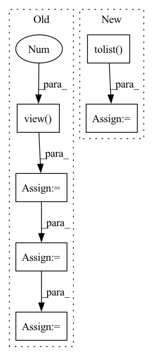

Pattern ID :10884
Before Change
text = batch.word
true_tags = batch.tag
pred_tags = self.model(text)
pred_tags = pred_tags.view(-1 , pred_tags.shape[-1])
true_tags = true_tags.view(-1)
batch_loss = self.loss_fn(pred_tags, true_tags)
batch_acc = self.accuracy(pred_tags, true_tags)
epoch_loss += batch_loss.item()
epoch_acc += batch_acc.item()
return epoch_loss / len(iterator), epoch_acc / len(iterator)
def train(self, n_epochs):After Change
true_tags = batch.tag.to(self.device)
pred_tags, batch_loss = self.model(words, chars, true_tags)
pred_tags_epoch += pred_tags
true_tags_epoch += [
[tag for tag in sent_tag if tag != self.data.tag_pad_idx]
for sent_tag in true_tags.permute(1, 0).tolist()
]
epoch_loss += batch_loss.item()
epoch_score = self.f1_positive(pred_tags_epoch, true_tags_epoch, full_report)
return epoch_loss / len(iterator), epoch_scoreIn pattern: SUPERPATTERN
Frequency: 3
Non-data size: 6
Instances Fragment ID: 37673023
Project Name: yoseflaw/nerindo
Commit Name: a70e55e7c0489cba1290ebd51512a9e878c6e0ed
Time: 2020-08-09
Author: yosefardhitowin@gmail.com
File Name: nerindo/trainer.py
M Class Name: Trainer
N Class Name: Trainer
M Method Name: evaluate(3)
N Method Name: evaluate(2)
M Parent Class: object
N Parent Class: object
M File Name: nerindo/trainer.py
N File Name: nerindo/trainer.py
M Start Line: 55
M End Line: 69
N Start Line: 85
N End Line: 104
Before Change
// flatten pred_tags to [sent len, batch size, output dim]
pred_tags = pred_tags.view(-1, pred_tags.shape[-1])
// flatten true_tags to [sent len * batch size]
true_tags = true_tags.view(-1 )
batch_loss = self.loss_fn(pred_tags, true_tags)
batch_acc = self.accuracy(pred_tags, true_tags)
batch_loss.backward()
self.optimizer.step()
epoch_loss += batch_loss.item()
epoch_acc += batch_acc.item()
return epoch_loss / len(self.data.train_iter), epoch_acc / len(self.data.train_iter)
def evaluate(self, iterator):After Change
pred_tags_list, batch_loss = self.model(words, chars, true_tags)
pred_tags_epoch += pred_tags_list
// to calculate the loss and f1, we flatten true tags
true_tags_epoch += [
[tag for tag in sent_tag if tag != self.data.tag_pad_idx]
for sent_tag in true_tags.permute(1, 0).tolist()
]
batch_loss.backward()
self.optimizer.step()
epoch_loss += batch_loss.item() Fragment ID: 37672943
Project Name: yoseflaw/nerindo
Commit Name: a70e55e7c0489cba1290ebd51512a9e878c6e0ed
Time: 2020-08-09
Author: yosefardhitowin@gmail.com
File Name: nerindo/trainer.py
M Class Name: Trainer
N Class Name: Trainer
M Method Name: epoch(1)
N Method Name: epoch(1)
M Parent Class: object
N Parent Class: object
M File Name: nerindo/trainer.py
N File Name: nerindo/trainer.py
M Start Line: 31
M End Line: 51
N Start Line: 61
N End Line: 83
Before Change
labels = labels[:, :, 0] // (C, batch_size)
mode_labels = labels[:, :, 0].mode(keepdim=True)[0] // (C, 1)
_labels = _labels.view(1 , -1) // (1, batch_size)
other_idx1 = ~_labels.eq(mode_labels) // (C, batch_size)
other_idx = torch.bitwise_and(other_idx1, labels.eq(_labels)) // (C, batch_size)
condition1 = other_idx.sum(dim=-1, keepdim=True) // (C, 1)
other_idx = torch.where(condition1, other_idx, other_idx1) // (C, batch_size)
min_values, min_idx = torch.where(other_idx, values, values.max()).min(dim=-1)[0] // (C)
min_labels = labels.gather(dim=1, index=min_idx.unsqueeze(1)).flatten() // (C)After Change
mode_idx = labels.eq(mode_labels) // (C, batch_size)
mode_labels_counts = mode_idx.sum(dim=-1) // (C)
condition2 = mode_labels_counts.ge(self.seed_num * 0.75)
idx_list = condition2.nonzero().flatten().tolist()
idx_list = sorted(idx_list, key=lambda idx: float(values[idx][mode_idx[idx]].min()))[:self.top_n_neurons]
neuron_dict[layer] = {int(idx): int(mode_labels[idx]) for idx in idx_list}
prints("{green}{layer:<20}: {reset}".format(layer=layer, **ansi), indent=4) Fragment ID: 37672957
Project Name: ain-soph/trojanzoo
Commit Name: 1684c28ef38502abb83d37beb845b69007e33274
Time: 2020-07-07
Author: ain-soph@live.com
File Name: trojanzoo/defense/backdoor/abs.py
M Class Name: ABS
N Class Name: ABS
M Method Name: find_min_max(3)
N Method Name: find_min_max(3)
M Parent Class: Defense_Backdoor
N Parent Class: Defense_Backdoor
M File Name: trojanzoo/defense/backdoor/abs.py
N File Name: trojanzoo/defense/backdoor/abs.py
M Start Line: 210
M End Line: 225
N Start Line: 234
N End Line: 254